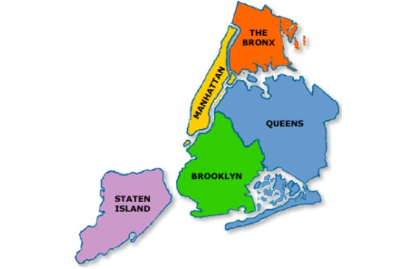

NUEVA YORK
Galería de imágenes:
Lugares de interés:
One World Observatory
El One World Observatory es una plataforma de observación en la cima del One World Trade Center en Nueva York, que ofrece vistas panorámicas impresionantes de la ciudad.
Monumento 11-S
El Monumento del 11-S en Nueva York es un memorial en honor a las víctimas de los ataques del 11 de septiembre de 2001, con piscinas reflectantes y nombres grabados. Un emotivo lugar de recuerdo.
Museo de Historia Natural
El Museo de Historia Natural de Nueva York es un destacado museo que alberga una extensa colección de especímenes naturales y culturales. Con exhibiciones que van desde fósiles de dinosaurios hasta culturas antiguas, el museo ofrece una experiencia educativa y fascinante para visitantes de todas las edades.
SpyScape
Hasta mi última actualización en enero de 2022, SPYSCAPE es un museo interactivo y experiencia educativa ubicada en Nueva York, dedicada al mundo del espionaje y la inteligencia.
Mapa de la población:
The Bronx
Queens
Manhattan
Brooklyn
State Island
Reseñas y ruta
TripAdvisor: Link a la reseña
Los Viajeros: Link a la reseña
Ruta en Nueva York :Link a la ruta en 7 días


NOTICIAS
Última hora: Sinagoga en Brooklyn
Bajo una famosa sinagoga de Brooklyn, un grupo de judíos ultraortodoxos del movimiento jasídico ha cavado un túnel secreto de 20 metros. Fue intervenido por la policía.
Nueva York declaró a las redes sociales como una amenaza para la salud mental de los menores
La ciudad emitió un aviso oficial, advirtiendo sobre los riesgos que representan las plataformas digitales para la juventud.
El hip hop cumple 50 años: del Bronx a reclamo para las grandes marcas
Este estilo musical surgió en medio de una crisis económica, evolucionó de forma rápida y anárquica y se convirtió en un estilo de vida. Consideran al DJ Kool Herc "padre" del hip hop.
Colegio de Abogados de Nueva York propone nuevas enmiendas relacionadas con criptomonedas
El distinguido Colegio de Abogados de Nueva York ha presentado propuestas revolucionarias destinadas a reformar la regulación de criptomonedas. Estas enmiendas, cuidadosamente elaboradas, buscan no solo fortalecer la seguridad, sino también brindar una mayor claridad legal.
Ciudad de Nueva York impone toque de queda en cuatro refugios de migrantes
El distinguido Colegio de Abogados de Nueva York ha presentado propuestas revolucionarias destinadas a reformar la regulación de criptomonedas. Estas enmiendas, cuidadosamente elaboradas, buscan no solo fortalecer la seguridad, sino también brindar una mayor claridad legal.